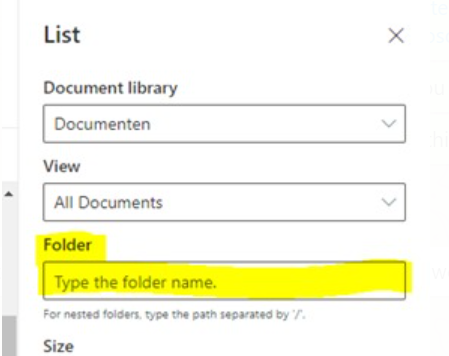

Add a document library web part to a page (and only show a specific folder)
Summary
A customer had the requirement to create a page for each of their 86 folders in a document library so they could add more information on those topics. That meant creating 86 pages, each with a document library web part on it that showed a specific folder.

The sample creating the page, adding the web parts and includes repeating this for all 86 folders. There is probably a really nice way to, in code, get all folders from the document library and loop through them. So I exported the document library to Excel and copied the folder names. I added some quotes and a comma (in an Excel formula using =CHAR(34) & A2 & CHAR(34) &”,”) and added an array to store these.
Connect-PnPOnline -Url https://yourtenant.sharepoint.com/sites/Yoursite/ -Interactive
$ray = "folder1",
"folder2",
"folder3"
foreach ($name in $ray) {
#create page
Add-PnPPage -Name $name -LayoutType Article -HeaderLayoutType NoImage -CommentsEnabled:$false
#add sections
Add-PnPPageSection -Page $name -SectionTemplate TwoColumn -Order 1
#add text webpart
Add-PnPPageTextPart -Page $name -Section 1 -Column 1 -Text "This is $name"
#add doclib
$DocLib = Get-PnPList -Identity Documents
$DocLibID = $DocLib.id.tostring()
Add-PnPPageWebPart -Page $name -DefaultWebPartType List -Section 1 -Column 1 -WebPartProperties @{isDocumentLibrary="true";selectedListId="$($DocLibID)";selectedFolderPath="/$name";hideCommandBar="false"}
$page = Get-PnPPage -Identity $name
$page.Publish()
}
Check out the PnP PowerShell to learn more at: https://aka.ms/pnp/powershell
The way you login into PnP PowerShell has changed please read PnP Management Shell EntraID app is deleted : what should I do ?
Source Credit
Sample first appeared on Use PnP Powershell to add a document library webpart to a page (and only show a specific folder) | Tech Community
Contributors
| Author(s) |
|---|
| Marijn Somers |
| Adam Wójcik |
| Todd Klindt |
Disclaimer
THESE SAMPLES ARE PROVIDED AS IS WITHOUT WARRANTY OF ANY KIND, EITHER EXPRESS OR IMPLIED, INCLUDING ANY IMPLIED WARRANTIES OF FITNESS FOR A PARTICULAR PURPOSE, MERCHANTABILITY, OR NON-INFRINGEMENT.